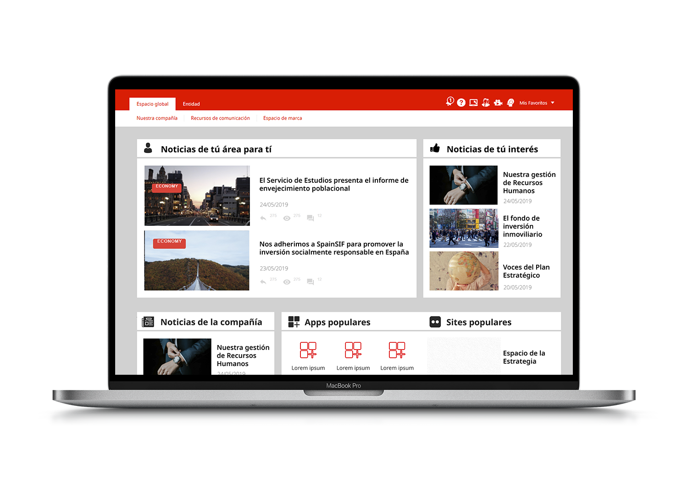
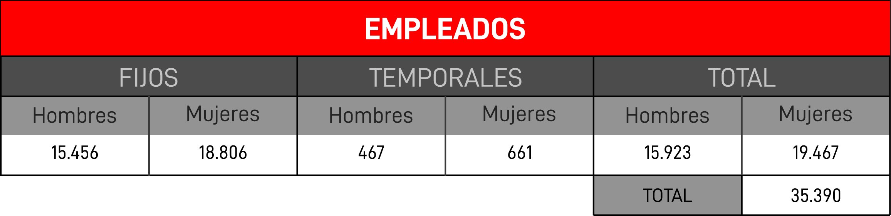
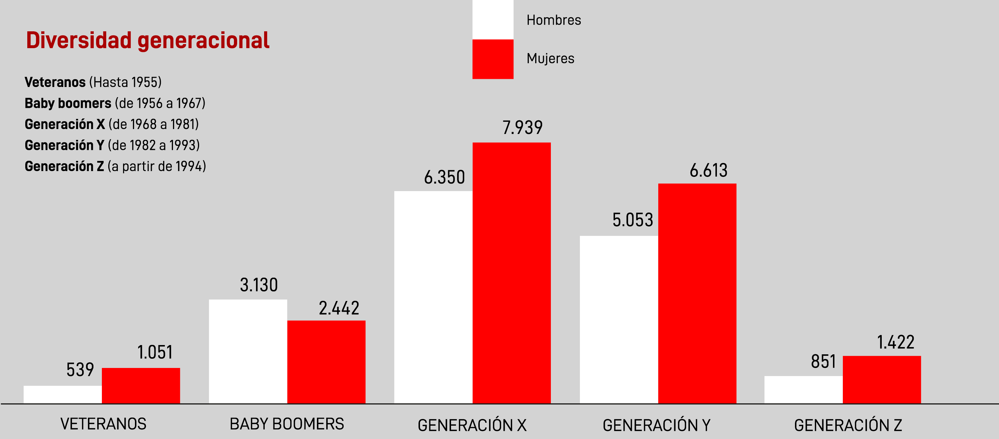
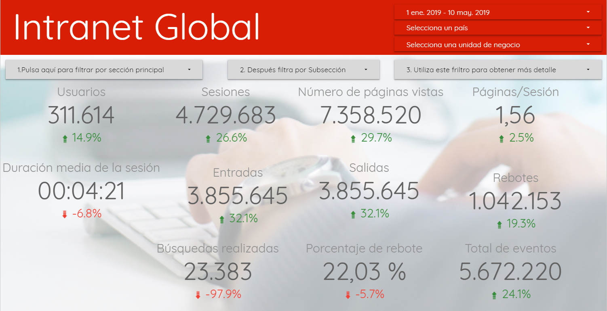
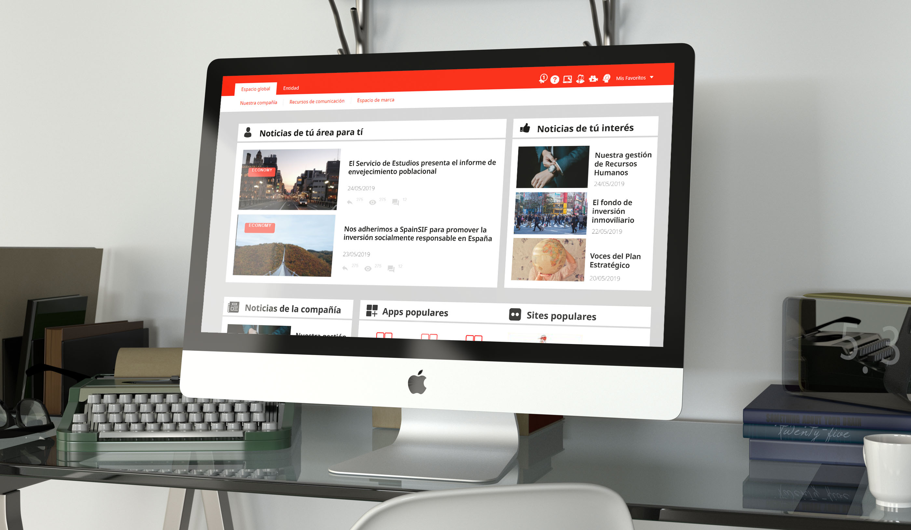

<!DOCTYPE html>
<html lang="en"></html>

<head>
    <meta charset="utf-8" />
    <title>Intranet Redesign - Alba Lozano</title>
    <meta content="Intranet Redesign" property="og:title" />
    <meta content="width=device-width, initial-scale=1" name="viewport" />
    <meta content="Webflow" name="generator" />
    <link href="./css/style.css"
        rel="stylesheet" type="text/css" />
    <script src="https://ajax.googleapis.com/ajax/libs/webfont/1.6.26/webfont.js" type="text/javascript"></script>
    <script
        type="text/javascript">WebFont.load({ google: { families: ["Montserrat:100,100italic,200,200italic,300,300italic,400,400italic,500,500italic,600,600italic,700,700italic,800,800italic,900,900italic"] } });</script>
    <!--[if lt IE 9]><script src="https://cdnjs.cloudflare.com/ajax/libs/html5shiv/3.7.3/html5shiv.min.js" type="text/javascript"></script><![endif]-->
    <script
        type="text/javascript">!function (o, c) { var n = c.documentElement, t = " w-mod-"; n.className += t + "js", ("ontouchstart" in o || o.DocumentTouch && c instanceof DocumentTouch) && (n.className += t + "touch") }(window, document);</script>
    <link href="./img/5e1896c118096113f58b1343_img-web32.png"
        rel="shortcut icon" type="image/x-icon" />
    <link href="./img/5e1896c52047f6412d1a6b2e_img-web.png"
        rel="apple-touch-icon" />

        <style>
            .w-webflow-badge{
                display: none !important;
            }
            .navigation-items{
            background-color: transparent !important;
        }
            </style>

    </head>

<body>
    <div data-collapse="medium" data-animation="default" data-duration="400" id="navigation-home"
        class="navigation-oscuro w-nav">
        <div class="navigation-items">
            <div class="navigation-wrap">
                <nav role="navigation" class="navigation-items w-nav-menu"><a href="index.html"
                        class="navigation-item w-nav-link">PORTFOLIO</a><a href="about.html"
                        class="navigation-item w-nav-link">sOBRE MI</a></nav>
                <div class="menu-button w-nav-button"></div>
            </div>
        </div>
    </div>
    <div class="section"></div>
    <div class="container">
        <div class="w-layout-grid project-description-grid">
            <div id="w-node-5f15d64a323c-7073e43d" class="div-block-10">
                <div class="position-name-text">Propuesta de mejora de una parte de la intranet global de una empresa
                </div>
                <div class="paragraph-light cc-position-name">Experiencia de usuario<br />Interfaz de
                    usuario<br />Evaluación heurística</div>
            </div>
            <div id="w-node-5f15d64a3248-7073e43d" class="div-block-4">
                <div class="text-block">El reto</div>
                <div class="paragraph-light">Rediseño y mejora de la intranet de una multinacional española que surgió
                    en 2016 como hito en la transformación de la empresa hacia un mundo más digital y global.<br />La
                    propuesta de mejora se centrará en un espacio de la intranet común a todos los empleados, en inglés,
                    español y portugués. En este espacio se muestran noticias de interés global, hitos corporativos y de
                    negocio.<br />Para ello es necesario realizar un análisis profundo de experiencia de usuario
                    centrada en intranets, análisis de la intranet actual y análisis comparativo con otras. Además de un
                    profundo análisis de usuario de esta, es decir, de los empleados de la empresa. Tras todo este
                    análisis se construye la propuesta de mejora basada en los resultados.</div>
                <div class="text-block">Los objetivos</div>
                <div class="paragraph-light">
                    <ul>
                        <li class="list-item-3">Detectar y definir los diferentes tipos de empleados de la compañía, es
                            decir, de usuarios de la intranet.</li>
                        <li class="list-item-2">Implementar mejoras en la interacción del usuario con la plataforma. A
                            través del análisis y estudio de la plataforma actual, se podrá detectar problemas y sacar
                            mejoras que los solucionen.</li>
                        <li class="list-item">Ver y analizar la interacción que tiene el usuario con la tecnología en
                            este contexto, pudiendo sacar modelos de comportamiento en función del tipo de usuario que
                            utiliza la plataforma.</li>
                    </ul>
                </div>
            </div>
        </div>
    </div>
    <div class="div-block-5">
        <div class="text-block-2">Experiencia de usuario</div>
        <div class="paragraph-light cc-position-name">El diseño de experiencias de usuario es la ciencia y el arte de
            diseñar un producto de manera que sea fácil de utilizar, cumpla con las expectativas y objetivos del usuario
            y del negocio. En este proceso aparecen multitud de disciplinas, enfoques, metodologías y herramientas, pero
            todas ellas trabajan de la mano para intentar proporcionar la mejor experiencia de usuario posible.</div>
    </div>
    <div class="container-2 w-container"></div>
    <div class="div-block-5">
        <div class="text-block-2">Análisis de la intranet actual</div>
        <div class="paragraph-light cc-position-name">La misión de la empresa era crear un espacio de trabajo único y
            global que facilitase la comunicación y el intercambio de información, conocimiento y contenido en toda la
            compañía.</div>
        <div class="text-block">Análisis comparativo de intranets</div>
        <div class="paragraph-light cc-position-name">Fue difícil poder acceder a intranets de otras empresas puesto que
            son contenidos destinados únicamente a empleados, pero se utilizó las intranets galardonadas en el
            World&#x27;s 10 Best Intranets de Nielsen Norman Group como base para hacer el análisis
            comparativo.<br />Como información concluyente se obtiene que las intranets galardonadas mejoraron su
            contenido adaptándolo a cada empleado, es decir, personificándolo, ofreciéndole así contenido de su interés.
            En cuanto a la navegación, priman los accesos rápidos, los menús y las barras de herramientas para conseguir
            una navegación más eficiente y productiva, que agilice el trabajo. En relación al diseño de interfaz, son
            diseños fuertes y robustos, con una imagen sencilla pero muy representativa.</div>
    </div>
    <div class="div-block-5">
        <div class="text-block-2">La importancia de centrarse en el usuario</div>
        <div class="paragraph-light cc-position-name">Como se ha mencionado anteriormente, uno de los motivos comunes
            por los que las intranets fueron galardonadas, fue por centrarse en el usuario, que es el empleado de la
            compañía.</div>
        <div class="text-block">Análisis del empleado de la empresa</div>
        <div class="paragraph-light cc-position-name">Es necesario conocer bien al trabajador, realizar un estudio
            cuantitativo y cualitativo para conocer sus motivaciones, modo de comportamiento, objetivos y necesidades.
        </div>
    </div>
    <div class="section-3"></div>
    <div class="div-block-5">
        <div class="paragraph-light cc-position-name">En la empresa conviven diferentes generaciones con diferentes
            formas de entender el trabajo, con valores, motivaciones, expectativas y creencias distintas. Esto supone
            varios retos dado que se debe generar una cultura integradora que facilite la transferencia de conocimientos
            entre las generaciones. Se debe conocer y aprovechar las características de cada generación para poder
            aportar la mejor solución posible. En definitiva, el modelo de la intranet debe dar respuesta al
            comportamiento y aceptación de la tecnología de cada una de estas generaciones.</div>
    </div>
    <div class="div-block-5">
        <div class="text-block-2">Analítica web y evaluación heurística</div>
        <div class="paragraph-light cc-position-name">Se analizan los datos pertenecientes a la pestaña en la que se va
            a realizar la mejora para conocer el comportamiento del usuario por la plataforma más a fondo basándonos en
            la navegación que desarrolla por el espacio.<br />Además se realiza una evaluación heurística para sacar si
            existen problemas de usabilidad y cuáles son.<br />Es importante no olvidarse de las encuestas para
            comprender las necesidades y fallos que el usuario encuentra.</div>
    </div>
    <div class="div-block-5">
        <div class="text-block-2">Prototipo de usuario y de un día de trabajo</div>
        <div class="paragraph-light cc-position-name">Se prototipa un usuario tipo y se recrea un día normal de trabajo
            para él, basado en la investigación previa y así obtener oportunidades de mejora.<br />Analizando esta
            información, se encuentran varios pain points para el usuario. En primer lugar, no encuentra noticias de su
            interés en la home por lo que ficha y se fuga a otro espacio de la intranet. En segundo lugar, la
            visualización de notificaciones desde el icono es muy limitada y no le permite gestionarlas de manera
            adecuada haciendo que pierda mucho tiempo.</div>
    </div>
    <div class="div-block-5">
        <div class="text-block-2">Propuesta de mejora</div>
        <div class="paragraph-light cc-position-name">Se plantea crear un espacio en donde la home sea mucho más
            operativa para que así el trabajador sea mucho más productivo y eficiente, mostrándole contenido
            personalizado en función de sus gustos y su actividad diaria. De esta manera se intentará evitar fugas y
            aumentar la profundidad de la visita.</div>
        <div class="text-block">Home dividida en niveles</div>
        <div class="paragraph-light cc-position-name">En el primer nivel se muestran al trabajador noticias
            personalizadas, por un lado de su área como empleado y por otro lado en función de sus gustos, noticias que
            pueden ser de su interés.<br />En el segundo nivel aparecen, por un lado, todas las noticias de la compañía
            en orden cronológico, y por otro lado, los iconos de acceso directo a las apps que mas utiliza el empleado
            dentro de la intranet.<br />El tercer nivel es un banner de suscripción vía RSS para las generaciones más
            longevas que son más propensas a visitar contenido que se les presenta y no a buscar.</div>
    </div>
    <div class="container">
        <h3 class="heading-3">¿Tienes algo que contarme?</h3><a
            href="mailto:albalozanoguiu@gmail.com?subject=You&#x27;ve%20got%20mail!"
            class="email-link">albalozanoguiu@gmail.com</a>
    </div>
    <div class="section"></div>
    <div class="footer-wrap">
        <div>
            <h1 class="heading-2">Alba Lozano Guiu</h1>
        </div>
        <div class="footer-links"><a href="https://www.linkedin.com/in/albalozanoguiu/" target="_blank"
                class="footer-item">Linkedin</a><a href="https://medium.com/@albalozano97" target="_blank"
                class="footer-item">medium</a></div>
    </div>
    <script src="https://d3e54v103j8qbb.cloudfront.net/js/jquery-3.4.1.min.220afd743d.js" type="text/javascript"
        integrity="sha256-CSXorXvZcTkaix6Yvo6HppcZGetbYMGWSFlBw8HfCJo=" crossorigin="anonymous"></script>
    <script src="https://uploads-ssl.webflow.com/5e089ec5ed2a2716cc73e430/js/webflow.cda4688cf.js"
        type="text/javascript"></script>
    <!--[if lte IE 9]><script src="//cdnjs.cloudflare.com/ajax/libs/placeholders/3.0.2/placeholders.min.js"></script><![endif]-->
</body>

</html>